SmartFrog Plug-In Readme
System Requirements |
Installation |
Quick Start Guide
System Requirements
The system requirements are the following:
-
SmartFrog.3.04.004_beta
-
Java 1.4
-
Eclipse 3.0
- The %SFHOME% environment variable must be set to SmartFrog_Install_Dir\dist.
- Tested
on Windows system only
Installation
To install the Eclipse SmartFrog plug-in, do the following:
- Download the test build from
Sourceforge.net.
-
For Unix Platform,
Untar SmartFrog_EplugIn_dist_1.0.2.Beta.tar to local drive file. It contains both the SmartFrog_EplugIn_1.0.2.Beta.tar file (the functionality plug-in) and the SmartFrog_EplugIn_doc_1.0.2.Beta.tar file (the online help plug-in).
Then, Untar these files (SmartFrog_EplugIn_1.0.2.Beta.tar and SmartFrog_EplugIn_doc_1.0.2.Beta.tar) in the \eclipse\plugins directory.
-
For Unix Platform,
Unzip SmartFrog_EplugIn_dist_1.0.2.Beta.zip to local drive file. It contains both the SmartFrog_EplugIn_1.0.2.Beta.zip file (the functionality plug-in) and the SmartFrog_EplugIn_doc_1.0.2.Beta.zip file (the online help plug-in).
Then, Unzip the files (SmartFrog_EplugIn_1.0.2.Beta.zip and SmartFrog_EplugIn_doc_1.0.2.Beta.zip) in the \eclipse\plugins directory.
Quick Start Guide
How to Create a SmartFrog Project
- From the Eclipse menu bar, select File > New > Project > SmartFrog. This opens
the following dialog.
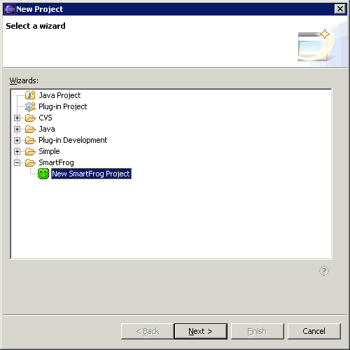
-
Expand SmartFrog and select New SmartFrog Project. Click Next. This brings up
the following page where you can specify a project name:
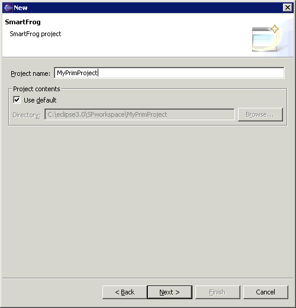
-
In the Project name: field, specify the project name. Click Next.
This brings up the following:
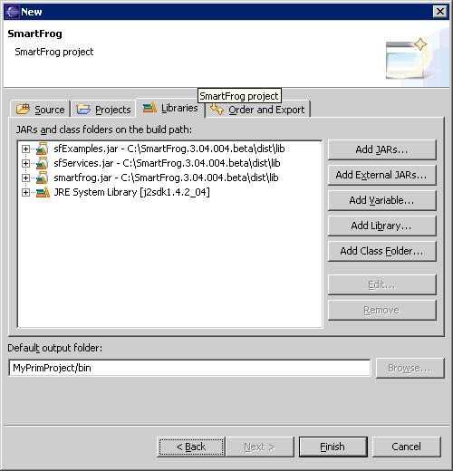
You can accept all the default values on the various tabs. As you can see from
the above screen shot, the relevant libraries have been imported into your
project.
-
Click Finish. You are automatically placed in the SmartFrog
perspective.
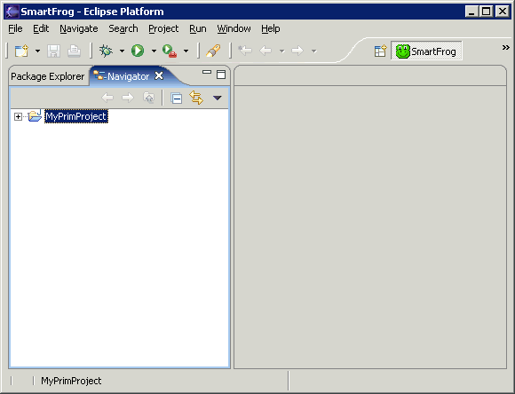
How to Create a SmartFrog Description File
- From the Eclipse menu bar, select File > New > SmartFrog
Description. This opens the following dialog where you can specify a name
for your description file:
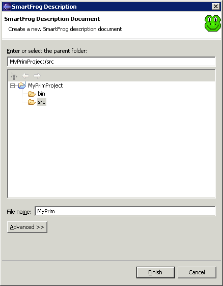
-
In the File name: field, specify a name.
- Click Finish. This opens the empty SF file in the editor
pane of the GUI.
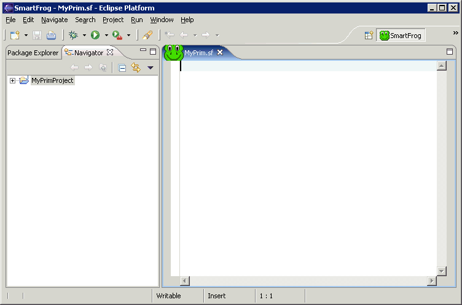
-
Cut and paste the following code into the editor pane:
#include "org/smartfrog/components.sf"
#include "org/smartfrog/examples/helloworld/printer.sf"
#include "org/smartfrog/examples/helloworld/generator.sf"
sfConfig extends Compound {
/**
* Generator component
*/
g extends Generator {
/**
* Message vector
*/
messages ["hello", "world"];
/**
* Link to the instance of the printer
*/
printer LAZY ATTRIB p;
}
/**
* Printer component
*/
p extends Printer {
name "myPrinter";
}
}
Immediately, you will see the editor feature of syntax coloring.
Another useful editor feature is the ability to define a section of code that you want
to expand and collapse.
-
To define a code area that can
expand and collapse, also called a folding region, highlight the lines of code
you want in this region. Right-click in the editor, and select Define Folding
Region from its context menu.
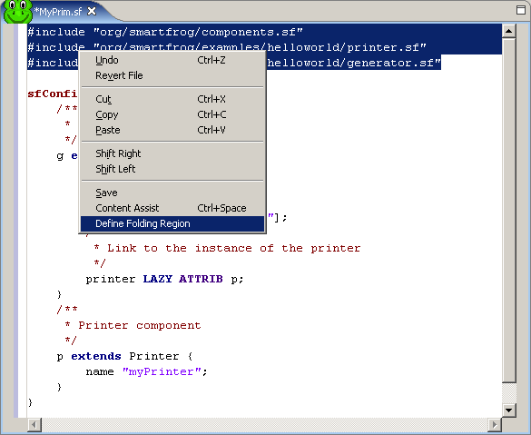
This creates a triangle icon to the left of the defined region that allows you
to expand and collapse that portion of the code.
How to Create a Java Class File Using SmartFrog Interfaces
- From the Eclipse menu bar, select File > New >
Class. This opens the following dialog where you can specify a name
for your Java class file:
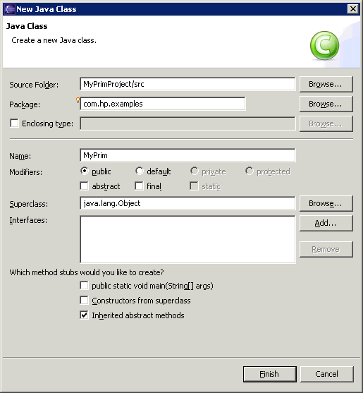
-
In the Package: field, you can accept the default or specify a
package name to avoid name clashes. In the Name: field specify a name
for your Java class file. In our example, the file name is MyPrim.
-
Click Finish. This opens a skeleton Java class file in the editor pane
of the GUI.
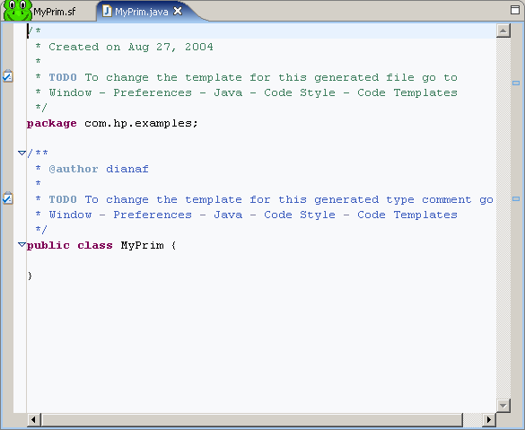
-
Highlight public class MyPrim {} in the editor
and cut and paste the following code over it:
import org.smartfrog.sfcore.prim.Prim;
import org.smartfrog.sfcore.prim.PrimImpl;
import org.smartfrog.sfcore.prim.TerminationRecord;
import org.smartfrog.sfcore.common.SmartFrogException;
import java.rmi.RemoteException;
public class MyPrim
extends PrimImpl
implements Prim
{
/* any component specific declarations */
public MyPrim()
throws RemoteException
{
}
public synchronized void sfDeploy()
throws RemoteException, SmartFrogException
{
super.sfDeploy();
/* any component specific initialization code */
}
public synchronized void sfStart()
throws RemoteException, SmartFrogException
{
super.sfStart();
/* any component specific start-up code */
}
public void sfTerminate(TerminationRecord arg0) {
// TODO Auto-generated method stub
super.sfTerminate(arg0);
}
/* any component specific methods */
}
The code has syntax coloring as does the description file.
Another useful editor feature is the ability to see the classes
in an imported package.
-
To see the classes contained in an imported package, highlight the import
statement and click CTRL-Space.
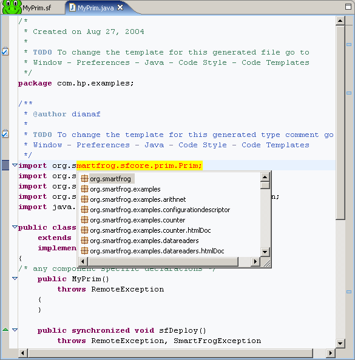
A pop-up box appears containing the classes contained in the highlighted package.
How to Change SmartFrog Installation Location
If you have more than one installation of SmartFrog on your system, you may
want to configure Eclipse to point to a different installation location. The
libraries in the specified location are the ones that Eclipse uses when
compiling your Java files.
- From the Eclipse menu bar, select Window > Preferences.
This brings up the Preferences dialog.
- Select SmartFrog in the left pane of the dialog page.
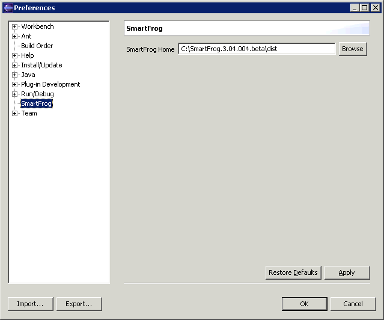
In the SmartFrog Home text field, the current location specified in the SF_HOME environment variable
is displayed.
-
If you want to change the location, browse to the new location and click
Apply.